Let’s get acquainted! My name is William Lalonde, and I’ve always been interested
in 2 main things, wildlife and the behind-the-scenes of games. I would often
spend my time either learning about animals or learning ways to break my
favorite game for fun.
Because of one of those key interests, I would often show
my friends the interesting ways I broke games ranging from Mario Sunshine to
Valhiem. This led to me testing games for friends, finding strange oversights that
allowed for all the wrong things, to help them find possible solutions in C++, C#.
Enrolling into a Game Programming course was the next logical step, so I did just
that at St.Laurence College. I’m already in my final year!
Some may say that programming is extremely frustrating from time to time,
but that's not how I see it; the challenge is what I enjoy about it.
Finding the solution to a problem that’s had me stumped is comparable to
winning against a friend at his own game.
Upon graduation in May, I plan on joining the game industry as a QA junior or a programmer junior.


Week 1-2
Week 2 of the capstone project was mostly set up for the project still. The project being a 2d platformer with fast paced movement, that promotes the player to go faster and faster. The gameplay of the game will be a mashup of Cup head and
Ori and the blind forest. Now that we (the group) now know what kind of game to make, let’s talk about our process.
Monday
We started that class by touching up the GDD (Game Design Documents) by listing to the professors’ inputs that he previously left on it. A good portion of those comments provided told us to clarify details. Working on the GDD ended reassuring
me since Pamela, Hyangsu and Kaleb started giving their input. During the previous week getting a response from Pamela, Hyangsu or Kaleb was rare occurrence, making the class boring.
Thursday
This class the group worked on their respective TDD (Technical design document). These document are made to create a easier work flow during the creating of the game. In a TDD there is normally 5 parts, a quick description of what your
making, technical challenges that your going to encounter, UML diagram which breaks down the necessary class with their properties, Flow chart which helps developers have a understanding of how the thing works and a task list which breaks
down the necessary tasks needed to make the thing.
While the group was working on the TDD, I was making the Jira webhook.
The purpose of this webhook was to notify the group in discord every time the Kanban board was updated. This seemed easy like a project that shouldn’t take a lot of time to make, and it is if you’re the admin of the Kanban board. If you
couldn’t guess, I wasn’t, this made a quick 20 minute learning process into an 1 hour process. Normally to make a webhook all you needed to do was, make a webhook bot in discord under the webhook tab and copy its URL. Then slap that URL into
https://skyhook.glitch.me/ and modify it to suit your need. Then finally go to your Jira under the webhook tab and paste the URL in the URL tab with the capability you want enabled.
Without Administration you can’t get into the discord or Jira webhook tabs. This took longer than I like to admit figure out, but in the end it works.


Week 3
Week 3 was a revision week; everyone was finishing up their respective TDD. Hyangsu was finishing up the saving system TDD, Kaleb was finishing up the UI TDD, Nolan was finishing up the combat TDD , Pamela was finishing up the audio TDD,
and I was finishing up the AI/Mobs TDD.
Monday
For Monday’s work period, I finished my TDD, and ended up trouble shooting the GitHub Webhook with Nolan. The issue at hand was the fact that he could download from the git repository but could not upload anything to it. Turns out the issue
was that git defaulted the branch to master when you download from it for the first time. The reason why that’s an issue, is because we don’t have a master branch in our repository. So, when Nolan tries to upload to the repository it would
look for a non-existing branch. The fix for it was simple, just run the “git checkout main”, this would change the branch of the local repository to master (an existing branch).
Thursday
Thursday quick day, it was a snowstorm, so the group wanted to get the work done and get home before the roads get worse than it already was. We couldn’t work from home since the files that we needed (the TDD) was on the school’s computers…
Either way Thursday, the group went around reviewing everyone’s TDD. At the end of the review, I don’t think anyone had to critiqued anything. I’m not sure if its because none of us felt comfortable to critiquing each other’s work or because
everyone’s TDD was superb. Must be the latter, since the groups TDD’s did indeed look good.
With the TDD’s essentially finished, next week is when we start working on the game. Week 4 is going to be the group’s first sprint. Sprint being a time-boxed period where the team completes a set amount of work. I look forward to this, since
now we will finally be able to start making the game.
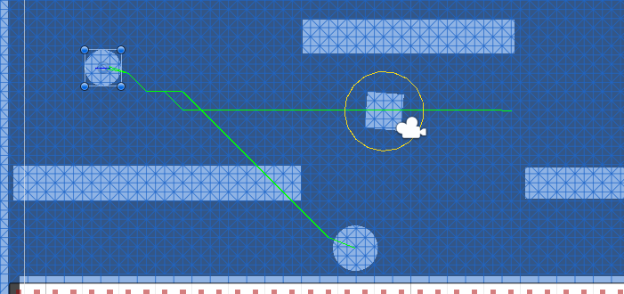
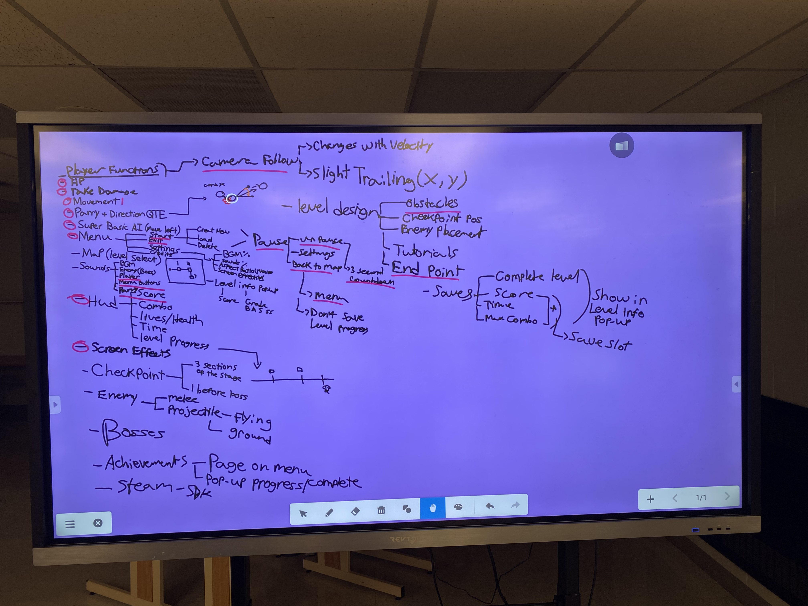
Week 4
Week 4 is the official start of “game making” for the group, since everyone can now actually start implementing things for the projects. This week I ended up playing with A* algorithm and scriptable objects. A* being an pathfinding algorithm
that finds the most efficient path for something to take and scriptable objects being a good method for information holding and manipulating.
Monday
Even though I said at the top that we started implementing things, that wasn’t the case for Monday. Monday Nolan, Pamela and Hyangsu were writing up a “battle plan” for this sprint(sprint is a pre-determined time period with set goals to
achieve). While they were working away at that, I was helping Kaleb apply the professors’ suggestions to his TD. Turns out there was no need to apply the professors’ suggestions grading wise, but I’m sure that doing so will help with the
process of the projects.
Wednesday
This class started off with the professor presenting a video about good tutorials. With the time that was left, I worked on created and stubbing out the base class, and the inheriting classes for the mobs. I did this to be able to create
enemies in an easier manner. This turned out to not be case, because of my lack of understanding of how classes work in unity compared to c++.
Thursday
Thursday was all about pathfinding. Since I didn’t know anything about path finding I was following a tutorial by Brackeys about this subject. This introduced me to A* and how to use it. About 30 minutes after I now had flying mobs tracking
down the player.
With mods that can now track the player down I wanted to be able to have different version of it and asked the professor what the best way would be to do so, he brought scriptable objects.
Weekend
Over the weekend I ended up starting over with the enemy. No longer using different class such as BaseMob,GroundMob and AirMob. Instead I have scriptable objects that hold basic info(health,speed,dmg) about a mob and intake the pathfinding
method(ground,air) that I desire. The next step in my plan now is the get my enemies to attack the player in different ways.
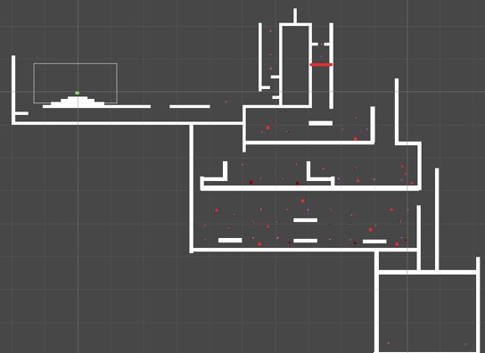
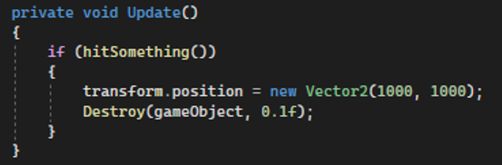
Week 5
At the end of this week, we created a working prototype. Everyone ended up finishing what they were assigned with little to no problems. The prototype allows the player to run, jump, parry and kill mobs and it even has a boss in place.
Monday
Monday was mostly just me trouble shooting how to get the mobs to “think” and I do mean more than to track down the player. For example, one of the mobs I ended up making will track the player down and starting shooting bullets at the player.
This mob however will stay at a safe range from the player, if the player is too far away, it will run towards them, if the distance is just right, it will shoot, and if the player is too close, it will run away.
While working on the mobs, I originally thought that ground mobs were going to be easier to work on compared to air mobs… This so far was the biggest misunderstanding I’ve encountered thus far. Since for ground mobs there are multiple checks
that have to be done to insure that they stay on the ground.
Wednesday/ Thursday
These work periods were mostly trouble shooting and tweaking things with Nolan. The first issue was the parry mechanic wasn’t working the way the programmed suggested. The player could parry off of bullets, but it would never turn off the
canParry bool after parrying off of it. Since canParry gets disabled OnTriggerExit but the bullet would get destroyed when the player touched it, this would never activate OnTriggerExit. The work around we found was to teleport the bullet
just before it got destroyed. I’m not really happy about this fix but it doesn’t really matter since for the prototype we removed the parry-able bullets. Another fix was the BasicGround Mob, it was originally using a Ray to detect if it was
grounded but turns out the ray I used was bugged, so as a replacement I “borrowed” Nolan’s ground check for the player.
Friday
Friday was a more relaxed day since all I did was make a prototype level for the prototype that included the mobs.
Week 6
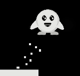
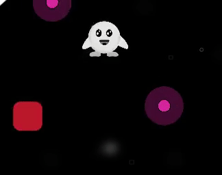
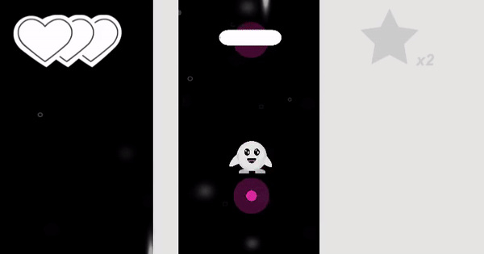
Week 7
Since the protype is finished, that means that the main concept of the game is also done. With that being the case, the majority of the work now, are touchups, such as how the gameplay feels, how the levels feel and visuals. Just saying
visuals is kind of downplaying how much work that really is, visuals really mean things like animation, mob art, player art, particles, art of the levels, background art, decorations, etc... There are a lot of things that still need to be
made. That’s why this week I started playing with particles.
The first particle I made when working on particles was player running particles. So, I made a unity particles component and was lost. There was a lot more options and sliders then I was expecting. Instead of playing with it for a while and
trying to brute force what I wanted, I search up a tutorial by Brackeys to gain a understanding of the system.
With a better understanding, I was able to create a “dust” particles that emitted from player when he ran. Even thought it did what I wanted I felt that maybe less was better, so I decided to change when the particles was played. Instead of
the dust being played when the player ran I made it so that it played when jumped and turned direction on the ground. The main things that makes the particles work is that the dust simulation space was the world and not local, allowing it to
float where it spawned.
The next particles I played with the mob death particles, here I wanted something little strange. I made it so that when the mob would die it would spawn a puff of particles that the player would push aside when flying threw the mob. The only
issue with all of this, was the fact that I mimicked the way I did the player particles. So the particles was child of mob, so when the mob would get destroyed the particles would also disappear. The fix was to create a prefab of the
particles, spawn it in when the mob dies and destroy it after the particle’s lifetime is over.
The most complicated effect I made this week was the “fade” effect. When the player would have a combo of 3 or higher, there would be a trail of after images of the player that appears. This isn’t even using the particles system. When the
player reaches a combo of 3 it spawns in a prefabs of the player model that has a animation attached to it, that animation being a fade away. After the fade is done it destroys itself. Leaving behind a neat little effect.

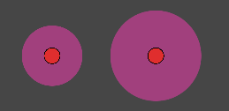
Week 8
This week was a start of a new sprint, meaning we now had a new goal in mind. That goal being a fully fledge polished playable level. With that in mind I set off to make that level, while other group member worked on polishing other aspects
of the game.
Monday
When I wasn’t troubleshooting with Nolan, I was designing the first level on my super high-tech program. There was an issue where the player could parry the bullet and hurt themselves. Originally, we tried to see if we could disable the
bullet after parry and reenable it when the player left the parry zone but this was causing more problems. Instead of struggling with this, I suggested of launching the bullet in the opposite directing the player wanted to go after parrying,
this way the bullet would have lower chance of hitting the player. Now, this doesn’t fix the issue, but it does greatly help when we tested it. Later on, we will fix this, but for now it helps.
In addition to this we also increased the size of the parry able window of the bullets since before hand, it was not forgiving at all. This also helps with the previous problem.
Wednesday
Wednesday was all about tile maps, I spent a good chunk of the day trying my best to get it to work. From the tiles not being able to split properly due the placement of them on the png, to the size of the tiles them size causing issues, it
was a interesting day.
Thursday
Started off Thursday, asking Joana if she could rework the tilemap, by changing the size of the tiles and by adding certain tiles. I was in need of tiles that would mesh well together, tiles that wouldn’t stick out if placed next to each
other. Luckily, she agreed to rework the tilemap and it was finished by the end of the period. While she worked on the tilemap, I attempted to set up Jenkins. Jenkins did not go well…
Weekend
Over the weekend I ended up finished up the first prototype of the first level. The prototype got 3 new mobs, a turret, the small penguin and big penguin. The turret would stand still and just shoot at the player, small was slow and jump high
while the big couldn’t jump but slid fast.
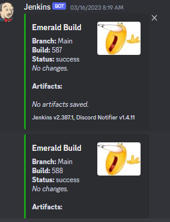
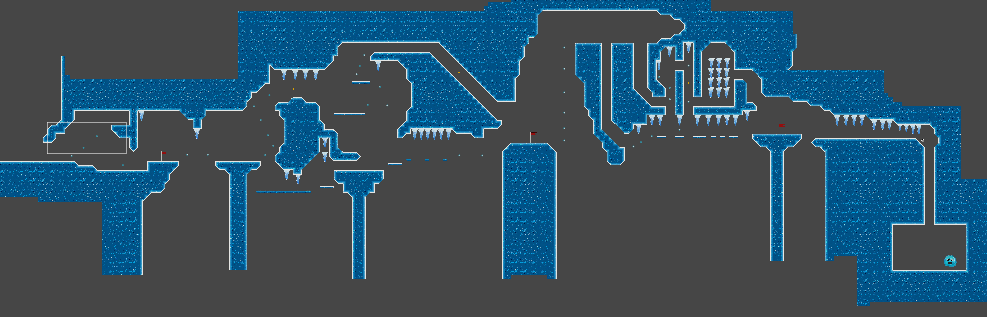
Week 9
With this being the last week of this sprint our group had to have something to hand in, that being the one functional level. The group decided that we should hand in 1 level pair, since the levels within the game follow the same repeating
pattern, 1 normal level and 1 boss level. The goal of this week for me was to hand in that boss level.
Monday
Picking up where we left off on last Thursday, me and Nolan got assistances from the professor with Jenkins. Turns out that where Jenkins asks for credentials to accesses the GitHub repository it does want your email but not your password in
the password section. Instead you needed to create a token for the repository and insert that inside the password section.
The next step was getting Jenkins to build and test the game. The main point of getting Jenkins was to be able to automatically test each build of the game, notifying the group if it failed at any point. This was the easiest part of Jenkins
due to the fact, the needed code was publicly available. The only 2 hiccup with this part of Jenkins, was when I forgot to put the Build Script inside of a editor file and when I didn’t comment out all of what I needed to.
With all that done, we headed for the night only to realise Jenkins was testing the build every 5 minutes and notify the discord server (via webhook). This was fixed the following day.
Wednesday
Wednesday was a more relaxed for me, spent a chunk of my time designing the boss level. While designing the level I decided that it needed something more than just platforms to jump on, it needed icicles. Since before even designing the boss
level, I was sure that I wanted a more platforming focused level. Platformers without obstacles aren’t very challenging, that’s why I needed icicles.
Spent the other chuck of my time implementing those icicles. They fell when the player was underneath, if the player collided with point, it would damage the player. The player could jump of the top of them and they had water drops coming of
the end of them to notify the player that there were icicles above.
Thursday
Thursday was a mixture of little touch-ups and helped Nolan with troubleshooting bugs. The main touch ups that I worked on added barriers that Nolan created to the levels so that the player couldn’t get out of the map or fall forever. In
addition to those barriers, I had to make another that would destroy and entity that wasn’t the player (mobs and Icicles), so that they didn’t fall forever.
Weekend
The weekend was a stressful one since a unforeseen issue had appeared. There was a merge conflict with the level1 scene. Not sure how or why it happened but fixed the merge conflict with Nolan’s guidance, had to do some git commands and open
up the scene within visual studio. In the end, I was able to merge the levels to main but certain defects had appeared like UI bugs, Boss Room snow getting disabled and Checkpoint prefab breaking.
This was later fixed by Nolan.
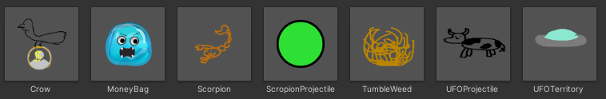
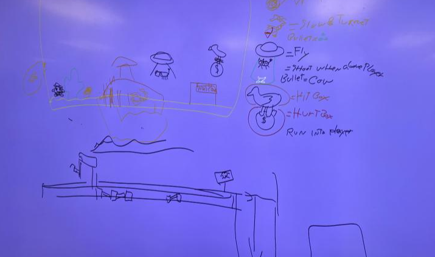
Week 10
With the boss level finished and the sprint done, that means we get to start a whole new sprint now. The goal of this sprint is to make level 2 and boss level 2, themed around western. Since the theme changed, the enemies now need to change
as well.
Monday
Monday was filled with a lot of brainstorming with the group, making sure everyone was able to put their input into the levels, as well as to make sure everyone understood what was going on for this sprint.
The mobs that we decided on was a crow, a scorpion, UFO and a tumbleweed.
Crow is only going to damage the player with the money bag it holds and can only get hurt if the player hits the crow itself.
The scorpion will shoot at the player and run away if the player gets to close.
UFO will follow above the player once the player enters its territory and will shoot the player.
The tumbleweed will move towards the player and randomly bounce.
Thursday/Wednesday/ Thursday
Started working on the crow since I thought it was going to be the easiest, all I would need todo was use the base AI from the air mob and just move the hurt box. The catch with the crow was to make it so that the player could only kill the
crow if they hit the crow while avoiding the damaging money bad covering the lower side of the crow. If the crow died, it would drop the money bag.
Dropping the money caused issues. I couldn’t spawn the bag on the crow if the crowed died, so I had save its last position in other script attached to the crows parent object. Once the crow died it would spawn it at its last position.
The first test of the crow worked with only 1 flaw. The bag was getting spawned at 1000 1000. This happens because the mob must get teleported away from the player before getting destroyed or else the on trigger exit could never be porc’ed
causing issues. The fix to this issue was easy but strange on, I just checked to see if the position that’s about to override the old safe location isn’t 1000 1000.
(After the merge on 3/27/2023 the crow broke)
Weekend
Making the other three mobs combine was a lot easier than the crow. The scorpion was just the Ground Ranger I made for the prototype. The UFO hardest part was making the territory, the territory was a collider/trigger the on enter/exit swaped
the UFO target to either the player or the UFO spawn location. The tumbleweed was a fun mob to make, since I had to play with forces, that means if / when I did misstype the values a tumbleweed would either jump into the sky or just tackle
the player at mach 2.